TGIF !!
어제 Dead Cross가 나오면서 오늘 증시는 큰 폭으로 하락중.
국채시장은 증시와 반대로 움직이는게 정상인데
현재는 급격한 국채 이자율의 상승으로 인해 양쪽 다 추락중
매달 첫번째 금요일 오전 5:30분에 발표되는 신규채용지표와 실업률이 채권시장에는 강력한 재료임
오늘 지표발표전까지는 거래도 없고 모두 관망중이었음
현재상황
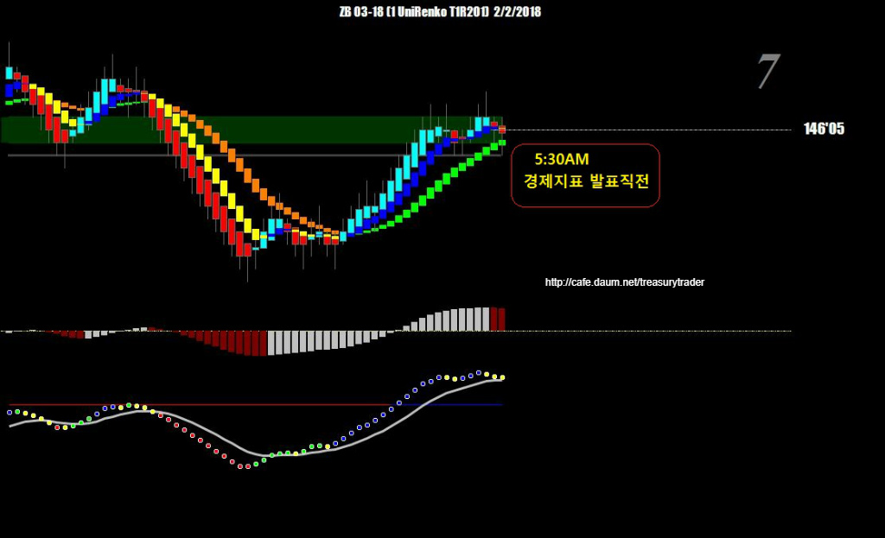
오늘의 경제지표발표 스케줄
(자동으로 실시간 업뎃되는 프로그램으로 발표5분전에 경보음이 울면서 팝업창이 뜸)
매우 편리함
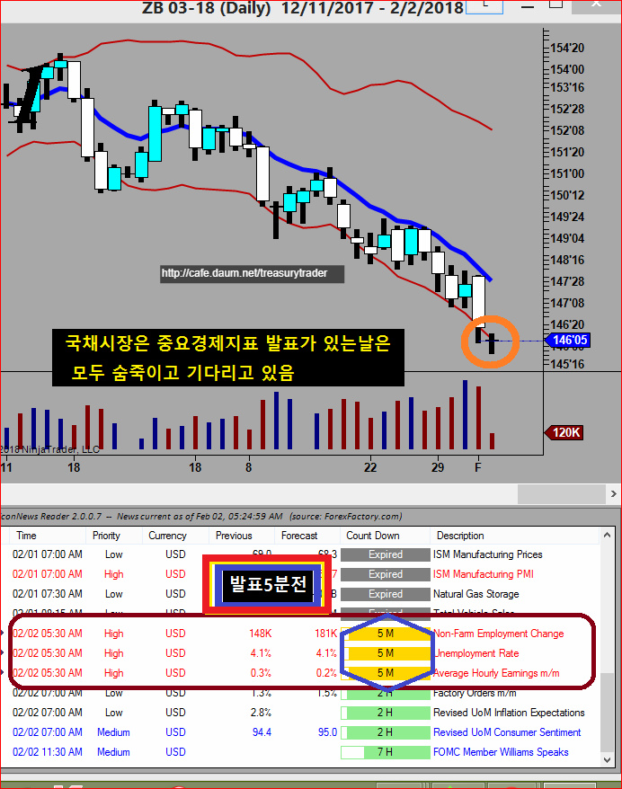
드디어 발표
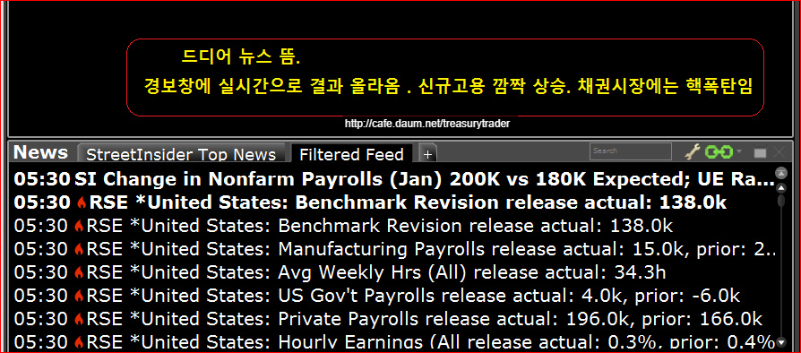
몇분만에 30 틱 이상 폭락
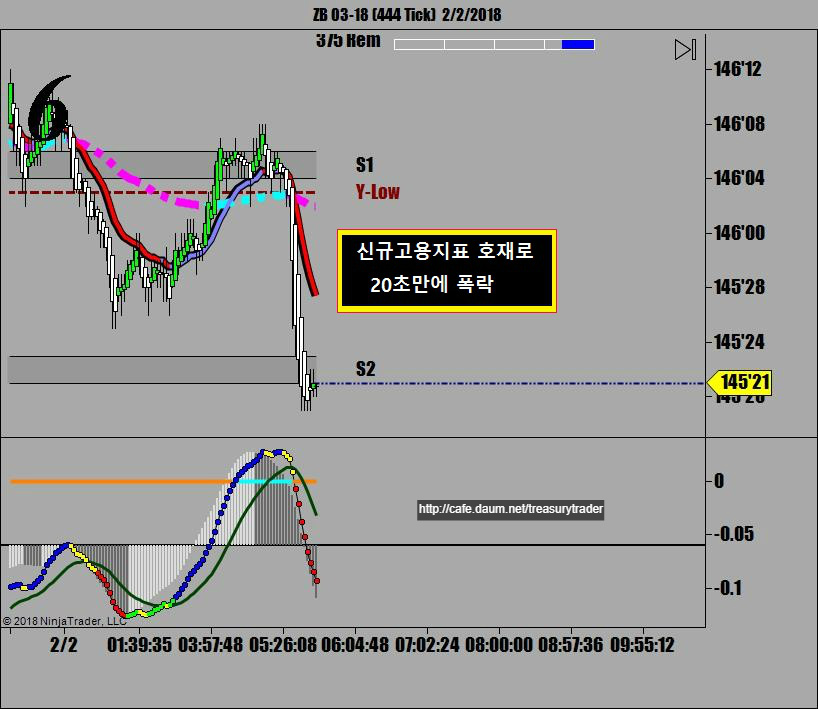

Chaos가 가라앉은 후 매매시작
(경제지표 발표전후에는 매매금지)
첫번째 매매
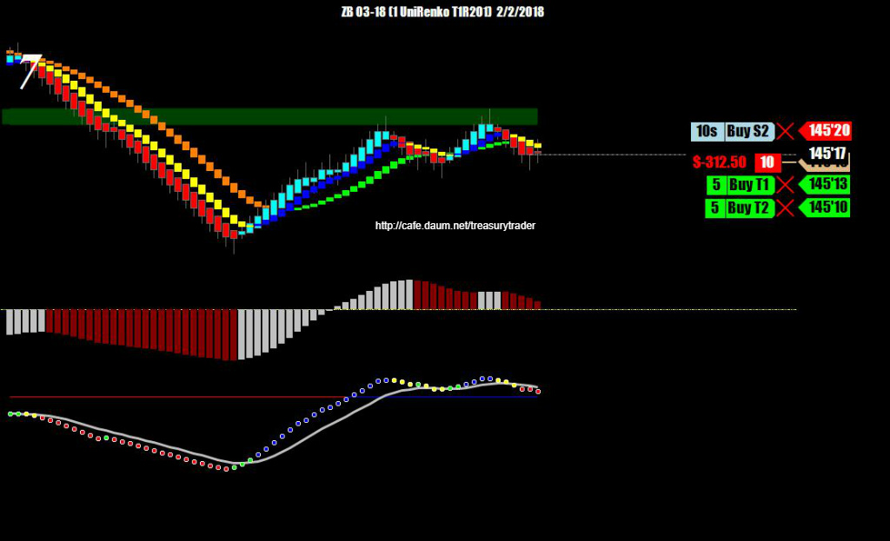
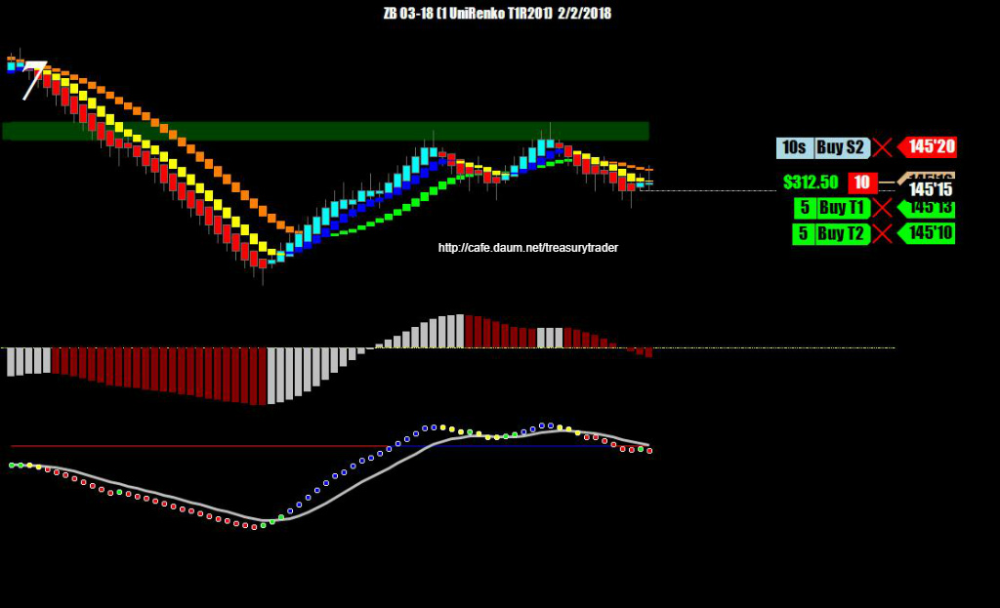
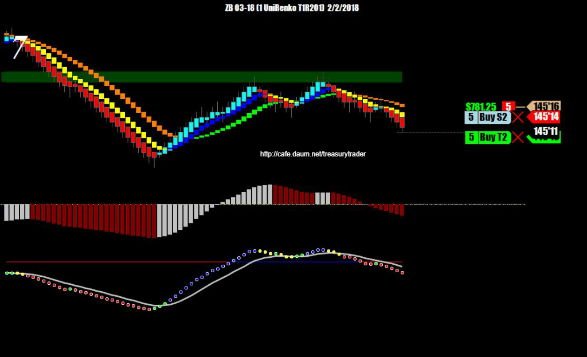
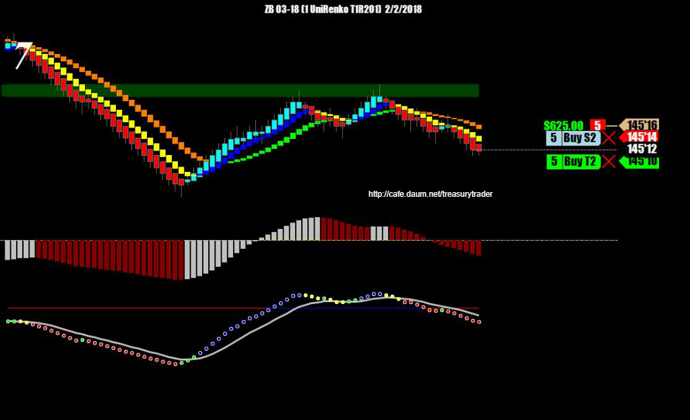
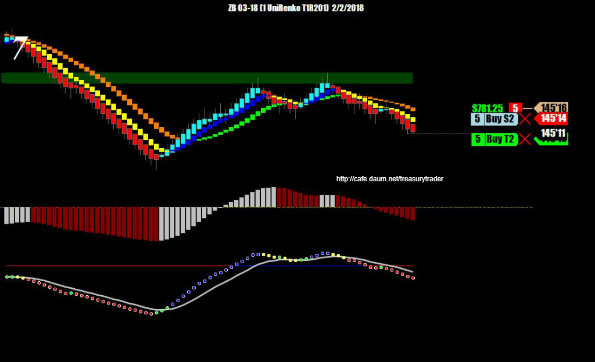
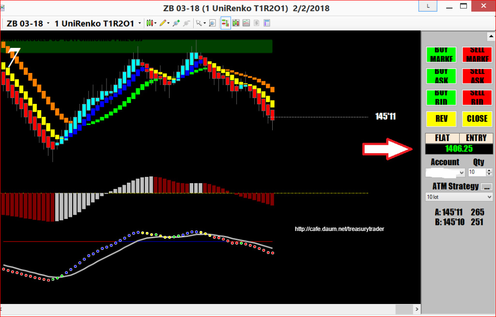
첫번째 매매 마감 수익 $1,406.25
두번째 매매
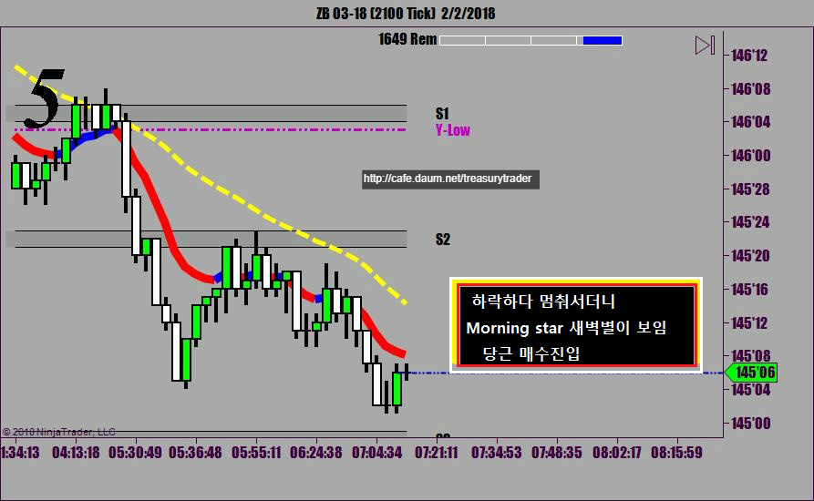
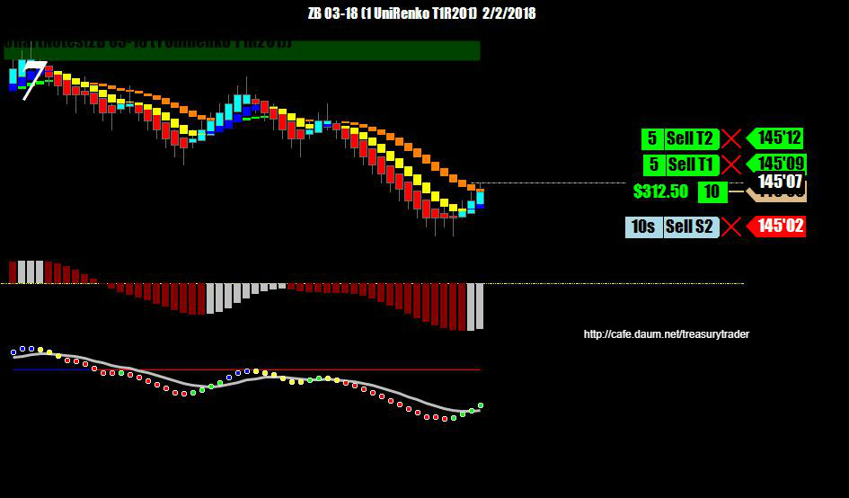
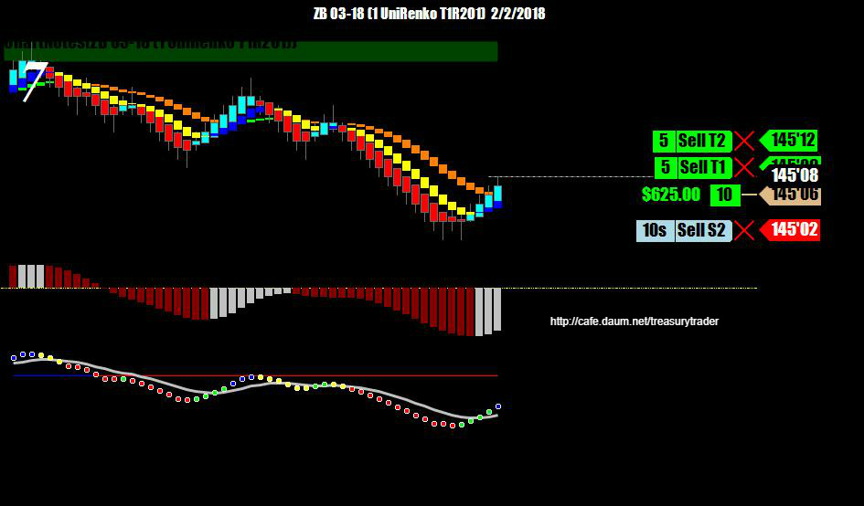
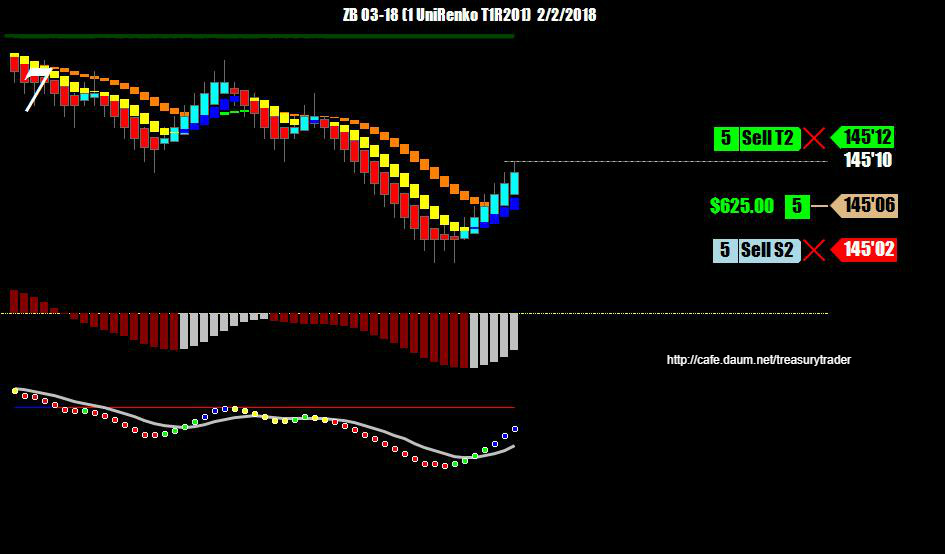
막판에 힘에 부쳐하길래 그냥 익절 함
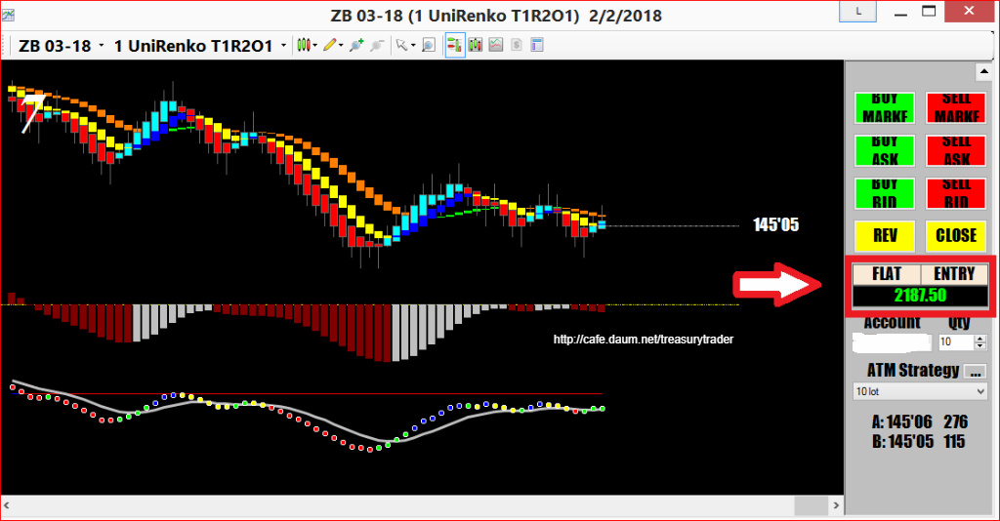
국채선물매매 트레이딩에서는
중요한 경제지표나 옥션결과발표가 나오는 시간에는
모든 포지션을 정리하고 관망해야 함
일단 발표되고 나서 모든게 진정된 후 정상 컨디션을 되찾고나면 매매를 시작해야 함
크루드오일의 재고량 발표나는 때와 움직임이 비슷함
오늘매매 세줄요약
* 중요재료 나올때까지 기다림
* 지표발표직 후 혼돈상황이 멈추고 1차매매 성공
* 샛별형 캔들패턴발생에 진입 2차매매 성공
오늘 매매수익 $2,187.50
ps.
그동안의 매매일지를 보면 알 수 있듯이 저의 매매스타일은 모멘텀을 이용한 스캘핑임
포지션을 10분 이상 가지고 있지 않음
"눈에 보이는것과 지금 펼쳐지는 상황만 믿는다"
일단 포지션을 가지고나면 분할매도로 책상위에 현금이 올라오면
즉시 얼마라도 반드시 챙겨 주머니에 넣은 다음
나머지 포지션은 존버....!!!
손절을 짧게 잡고 따라붙으면서
가즈아 !!! 를 외치다가 주가가 반대로 돌아서면 3틱에서 손절.
수익은 내 호주머니로 들어오기 전까지는 수익이 아님
옛부터 월스트릿에 전해져 내려오는 유명한 말...
Take the profit and run !!
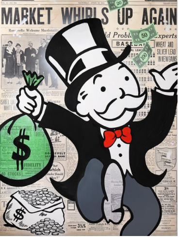
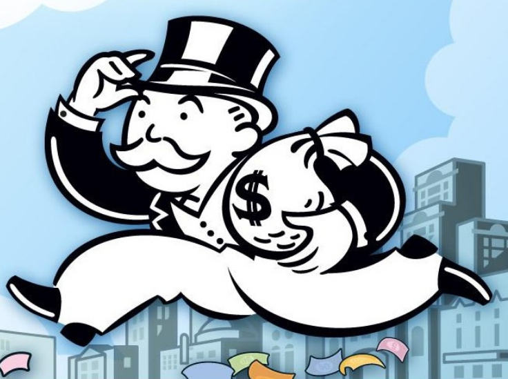